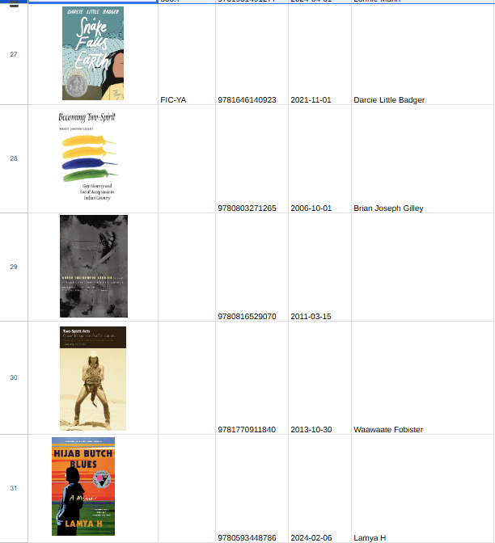
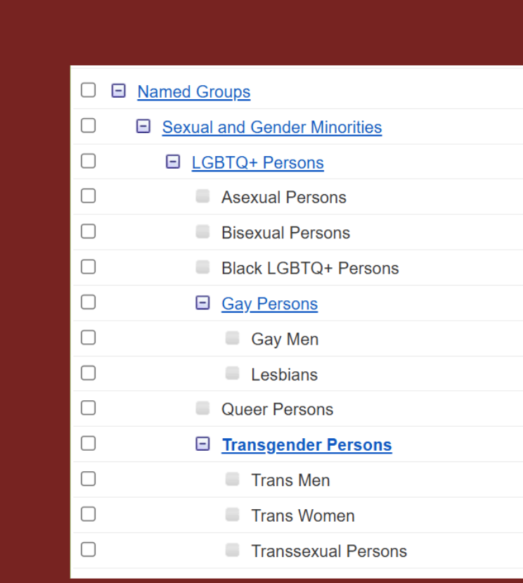
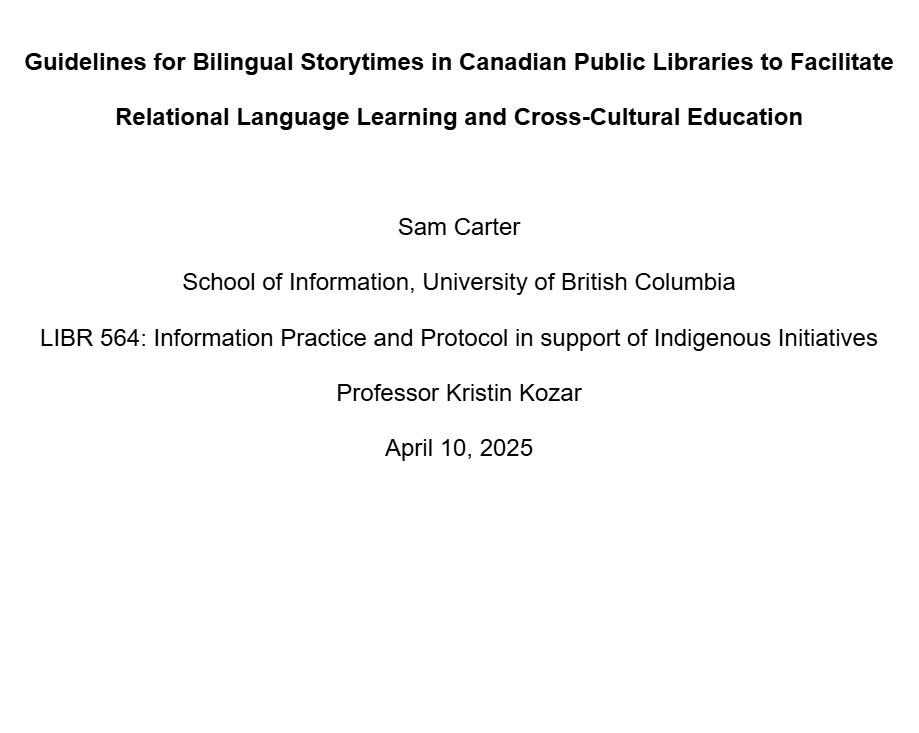
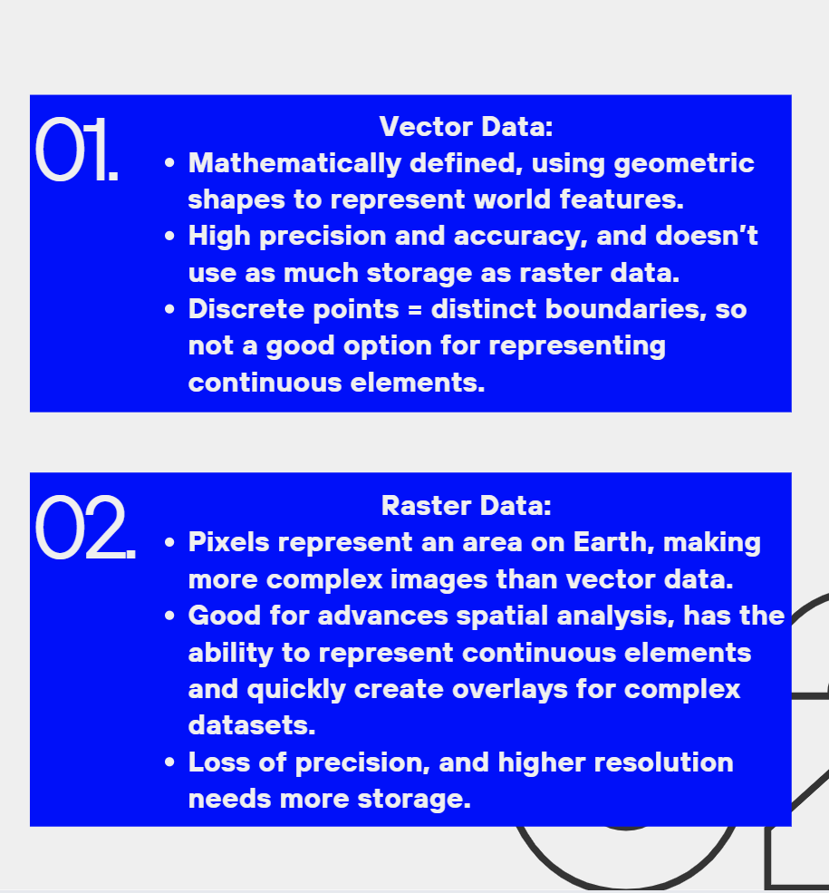
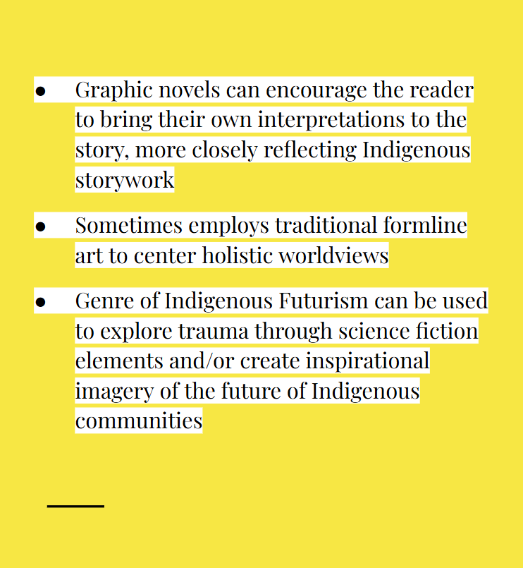
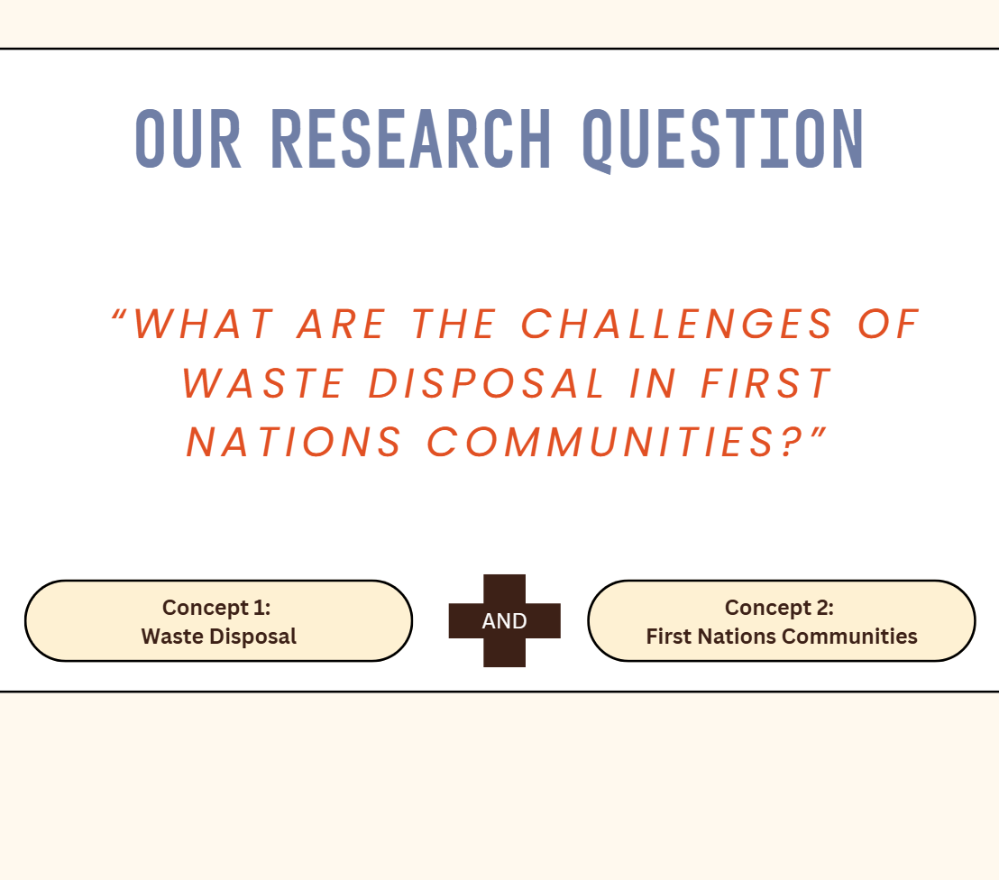
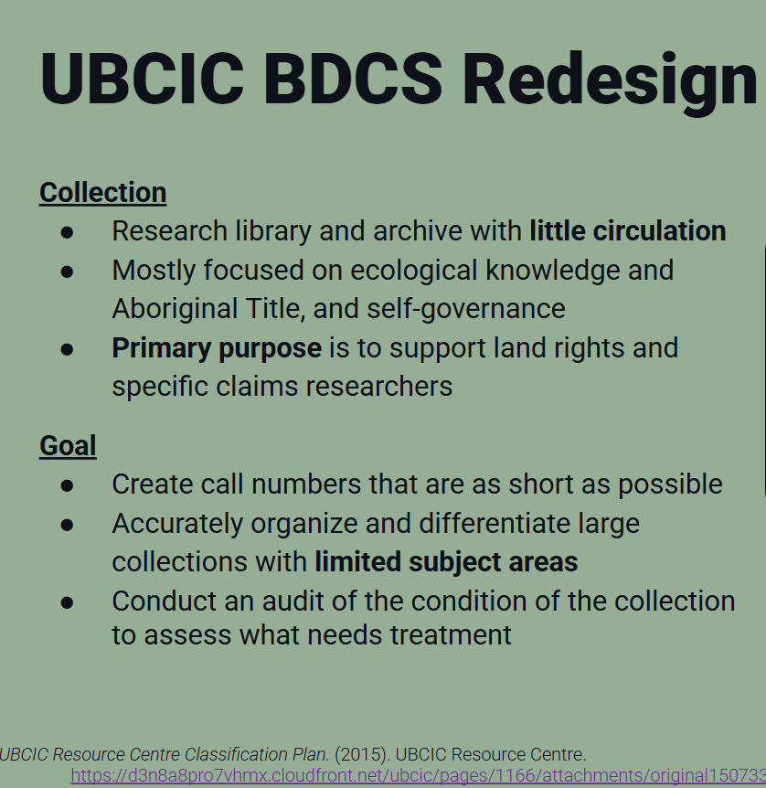

Portfolio

Out on the Shelves Acquisition Project
The purpose of this assignment was to create a list of acquisitions to fill a gap in the Out on the Shelves Library’s collection with a budget of $1,000. The resulting acquisitions seek to add representation of Two-Spirit and Non-Binary resources, particularly in the children’s and graphic novels collection.
Link to file
Indigenous Research Foundations Course
This project was completed for UPROOT, UBC’s Indigenous pharmacy research team, in partnership with Xwi7xwa Library. It is a 6-module course that covers essential topics for researchers engaging in medical research with Indigenous participants, such as Indigenous data sovereignty, community-based research ethics, working with communities, and systematic searching for Indigenous health topics. The example provided in the link below is module 4 on Indigenous data sovereignty.
Link to file
Legal Information Quartler for Incarcerated Peoples
The purpose of this project was to create a way for accessible legal information to be delivered to incarcerated people in BC provincial prisons. It resulted in a quarterly publication that balanced the need for in-depth research and quick browsing. It was informed by universal design principles and trauma-informed approaches.
Link to file
Indigenizing a Science Library Through Green Spaces
The purpose of this assignment was to re-imagine a science library using a social justice lens. My group chose to do a large-scale space renovation that would indigenize the space using green spaces and Musqueam interior design recommendations in order to include non-Western epistemologies in central library spaces.
Link to file
Indexing of Medical Literature on Gender Diverse Peoples in Medline and CINAHL Pilot Study
The purpose of this project was to assess the accuracy and completeness of automated indexing in Medline by comparing the indexing of the same articles on gender diverse peoples in CINAHL, which uses manual indexing. In addition to comparing indexing processes, it also assessed how well each controlled vocabulary represented gender diverse groups, such as non-binary, genderfluid, and Two-Spirit peoples.
Link to file
Case Study Strategic Planning Board Report
This project was the result of a case study of a large university in British Columbia. It involved an environmental scan of the higher education environment, which informed the creation of 3 strategic goals in response to pushback to EDI principles and the need for critical AI literacy education.
Link to file
Bilingual Storytime Program in Partnership with Local First Nation Communities
This project acts as a guideline for implementing a bilingual storytime program with local First Nations in public libraries. It takes a Lower Mainland focus while being broad enough to apply to any library. It discusses storywork as Indigenous pedagogy, trauma-informed spaces, protection of Indigenous Knowledges, and language revitalization.
Link to file
Geospatial Data Presentation
The purpose of this project was to give an overview of geospatial data and its management as data librarians.
Link to file
H-Index Reflection
The purpose of this project was to assess the differences between H-indexes on different platforms for an Indigenous researcher. This acknowledges the issues in traditional measures of research impact, especially for marginalized peoples and researchers who create non-traditional research outputs.
Link to file
CINAHL Guided Exercise Tutorial
This is a tutorial for structured searching in CINAHL using the new EBSCO interface. I assisted in this project as a student librarian at the Woodward Library. I helped implement HMTL/CSS/Javascript edits to align with suggestions made by UBC librarians in addition to creating the video content.
Link to file
Indigenous Comics Presentation
The purpose of this project was to educate classmates about Indigenous perspectives on graphic novels, the Indigenous artists prominent in this space both locally and nationally, and recommend items that could be added to collections to fill gaps in this representation.
Link to file
Compendex Engineering Village Search Demonstration
The purpose of this project was to demonstrate an example search in a discipline-specific science database. As a project for an FNCC course, I additionally discussed considerations for searching Indigenous topics in this database.
Link to file
Brian Deer Classification System Presentation
The purpose of this project was to compare adaptations of the Brian Deer Classification System across Canada in order to discuss the rationale behind these projects, considerations around collections and user groups, and ways to implement these projects in our professional work in the future.
Link to fileRevised Long Reflection 1
Draw upon knowledge of: professional ethics, the rights of Indigenous peoples, and principles of equity, diversity and inclusion to guide their practices
Link to fileLong Reflection 2
Design and conduct research and evaluation studies to inform evidence-based decision-making
Link to fileRevised Short Reflection 1
Identify information needs and respond through the design and provision of information products and services
Link to fileRevised Short Reflection 2
Contribute to the advancement of the field through informed practice, service and/or research
Link to fileShort Reflection 3
Organize and manage information to facilitate access, reflection, and use in a range of contexts
Link to fileShort Reflection 4
Employ information systems and current technologies to address real-world situations, informed by social and cultural perspectives
Link to fileShort Reflection 5
Reflect in an informed and critical manner on information infrastructures and practices, acknowledging the role of power and privilege, the ongoing influence of colonization, and the value of diverse worldviews
Link to fileShort Reflection 6
Demonstrate effective collaboration, decision-making and leadership in team settings
Link to fileShort Reflection 7
Develop respectful reciprocal relationships with professional and community groups
Link to fileShort Reflection 8
Communicate clearly using a range of media suited to diverse audiences and goals
Link to file